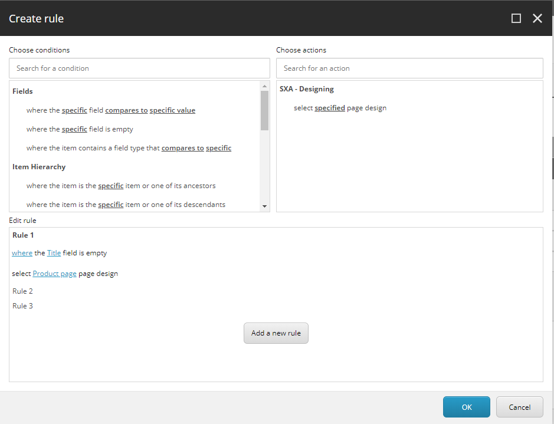
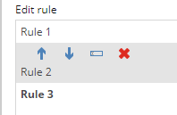
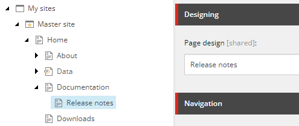
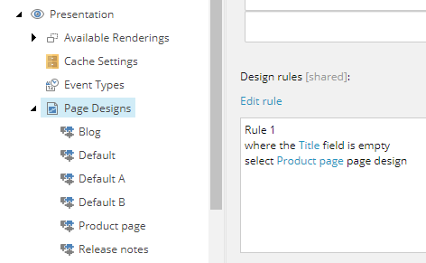
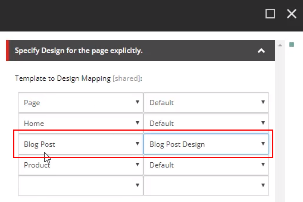

Use a rule to select a page design for a page
To keep the layout of your site content consistent, you can use page designs. You can select a page design on a page level, and you can map the template of a page to a page design. Sometimes this is too time-consuming. For example, for a site that contains a catalog with multiple different product types that all need a slightly different page design. In this case, you can apply a rule with conditions and actions that determine the page design.
Note
Rules must be executed during publishing.
Rules that are executed depending on visitor or time context will not work for websites running with Experience Edge.
To create a rule to set the page design:
Navigate to sitecore/Content/<site collection>/<site>/Presentation/Page Designs, on the Content tab, in the Designing section, in the Design Rules field, click Edit Rule.
In the Create rule dialog box, in the Choose conditions section, create the conditions. By default, you can set conditions for Fields, Item Hierarchy, Item Information, and Item Version.
For example, if you want to assign a page design to all pages that do not have a title, click Fields, and click where the specific field is empty. Click specific field and enter Title and click Ok.
 In the Choose actions section, click the select specific page design action.
In the Edit rule section, click specified, select the page design, and click OK.
You can add more rules and use the arrows to change the order.

If you have multiple page design options set, the order of precedence, from highest to lowest is:
Page design selected on a page level - assign page designs to specific pages. This might be convenient for a page that you normally do not use very often, such as, for example, a release notes page.
Rules defined for site - set conditions and actions to select the page design.
 Page Design to Template Mapping - map content types to your page layouts. For web pages that you use often, such as landing pages, product pages, and navigation pages, you can keep them consistent by assigning a page design to the template for that page.

This means that if, for example, you want the rules that you create to determine the page design, you must not select a page design on a page level.